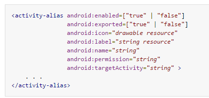
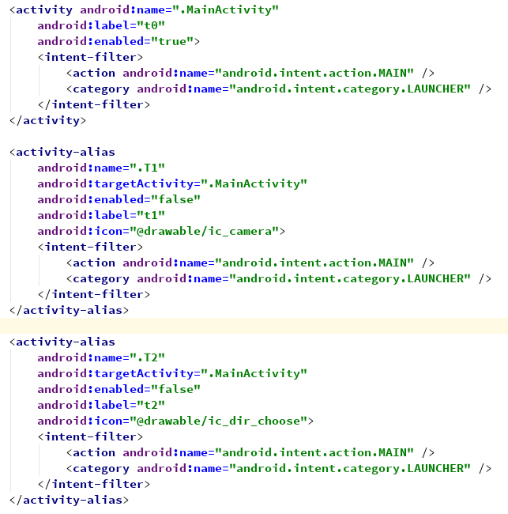
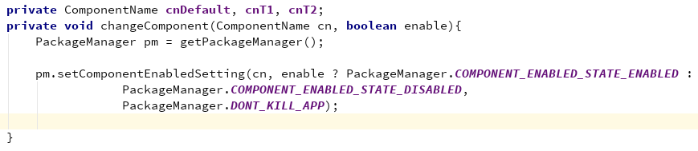
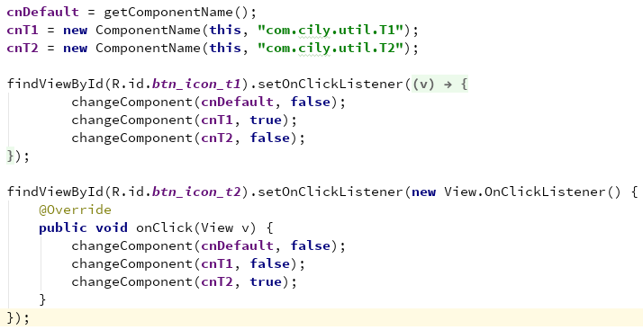

前些天遇到一个问题，问如何修改apk的桌面图标和名称，其实就是动态修改apk的桌面图标和名称的问题。还好系统为我们提供了解决方案，那么，具体是如何实现的呢？本blog将详细讲述动态修改apk的桌面图标和名称的实现方法。
在AndroidManifest.xml文件里，有一个叫
相信各位对这段文字的意思，肯定能理解的，我就不班门弄斧的去翻译了。但需要注意的一点是，目标Activity和别名Activity必须在同一个Application下，并且，目标Activity必须在别名Activity之前声明！具体使用语法为：
在修改桌面图标和名称里，需要设置enabled、icon、name、label、targetActivity等属性。具体实现及使用代码如下：
使用代码：
 大概的实现方法，就是这些了，具体一些细节，还需要处理，比如：在特定时间修改桌面图标和名称等具体实现方法，还需要处理好。但是，我发现了一个奇怪的问题，换成了其他的图标和名称后，再换回默认的图标和名称，整个应用从桌面消失了，但app并未卸载，暂时未找到原因所在，如果哪位知道，希望能不吝赐教，谢谢！